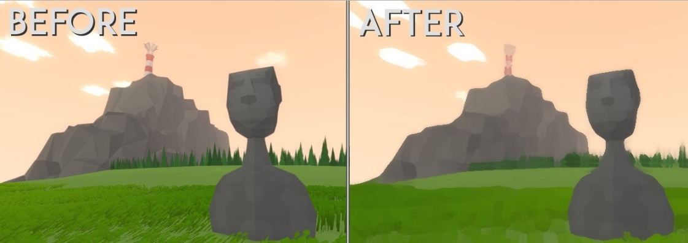

software projects
I'm currently writing a simple language interpreter from the ground up in C#. I plan to use it to implement programming as a game mechanic in Unity. It's in a fairly early stage right now, but the basic structure has been laid out.
Initially, I wanted to write a really simple compiler to get a programming mechanic up and running, but I became interested in the design and implementation of languages so I started to read up on the topic.
Check it out on Github
Whenever I can come up with a reason to, I try to write interesting shaders and postprocessing effects. These are some of my favorite results.
Kuwahara Filter:

Symmetrical Discrete Cosine Transform
Noise-based Distortion and Transitions

Engine: Unity/OpenGL
Languages: Cg (variant of HLSL)/C++
Spreadsheet program similar to Google Sheets. I wrote a spreadsheet front-end in C# with a formula parser as well as a dependency graph to update dependent cells. Afterwards I worked on a TCP/IP based multi-threaded server in C++ utilizing the boost library.
Team Size: 4
Languages: C#/C++
Wrote a custom image codec for ffmpeg in C. The objective was to achieve a compression of 1/3 the original size. My partner and I came up with a strategy of storing alternating color channels for each pixel (red, green, blue, etc), then averaging neighboring pixels to get an approximation of the image's original color.
Team Size: 2
Language: C